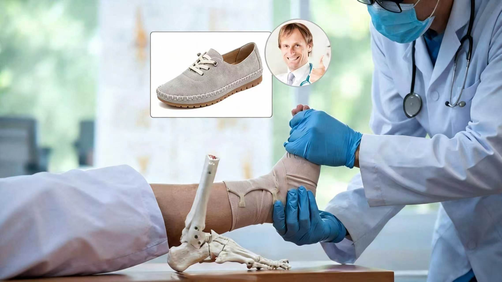
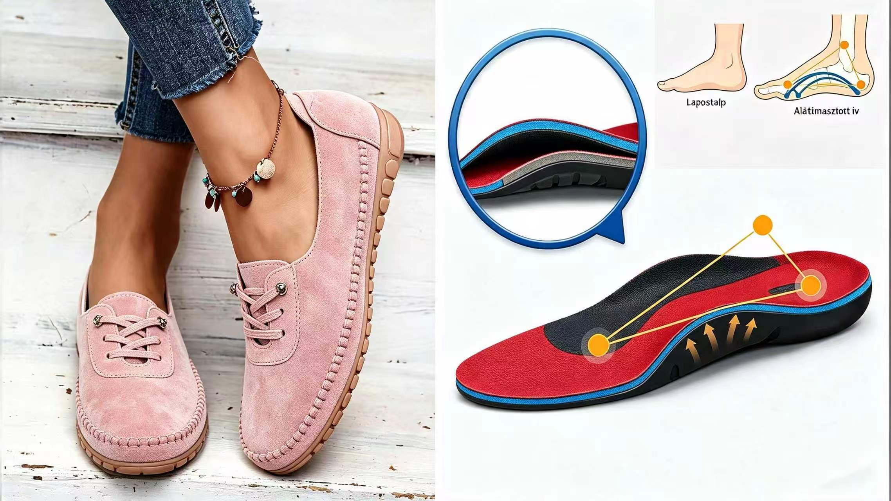
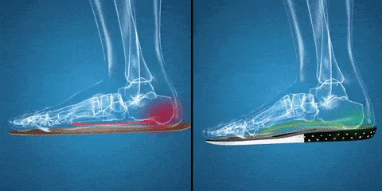
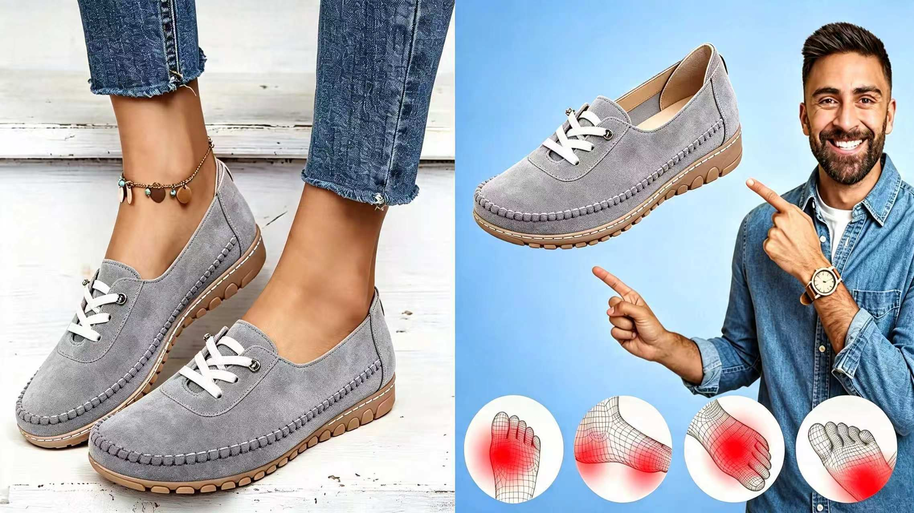
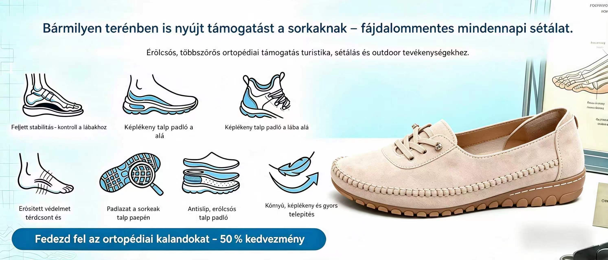
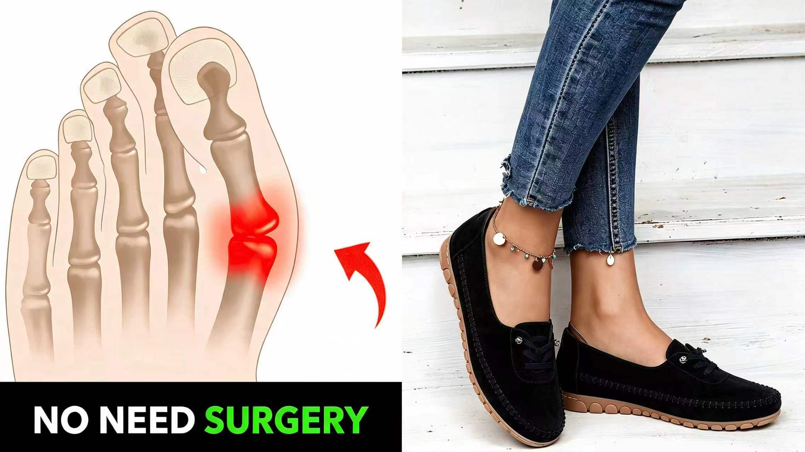
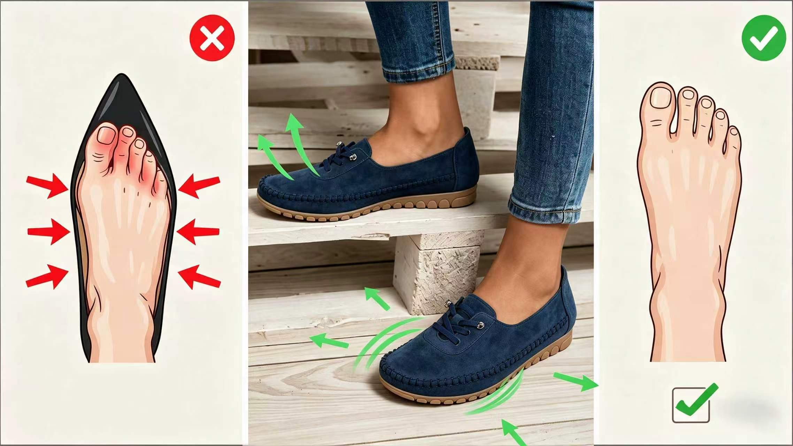
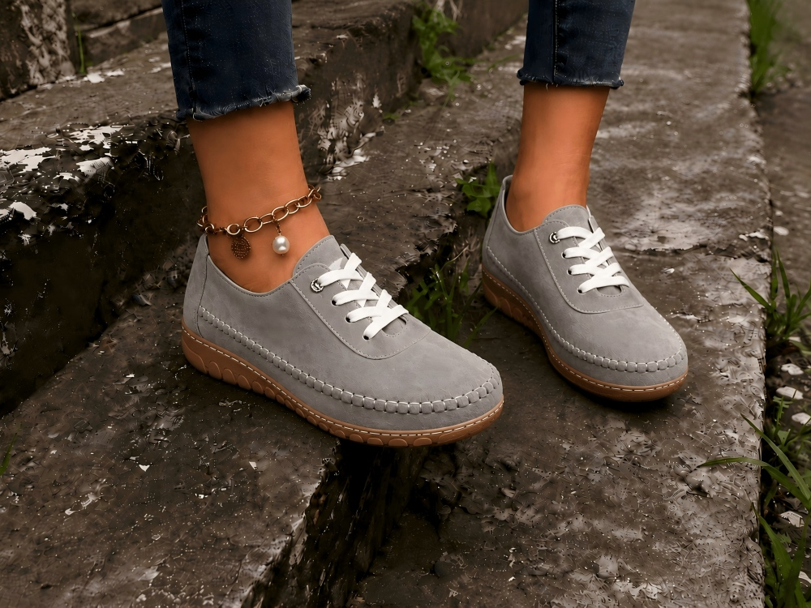
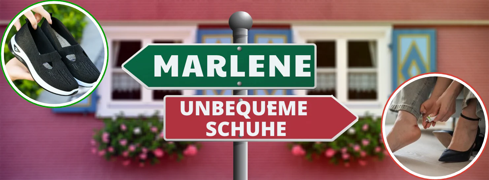
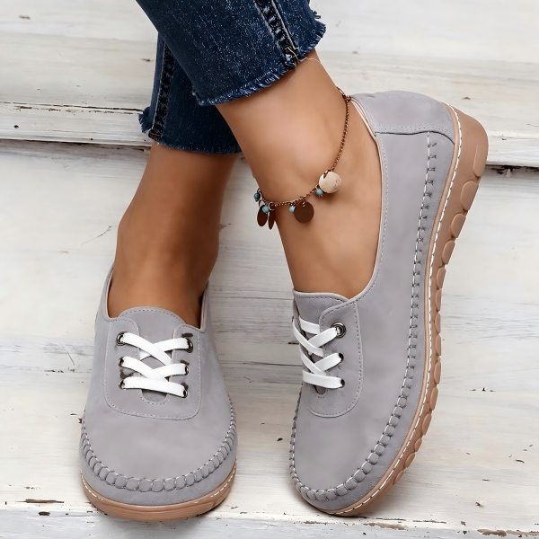

REKLAMA
„Chcę tylko wygodnych, atrakcyjnych i luźnych wiosenno-letnich butów, które ulżą mi w bólu spowodowanym nierównowagą stóp podczas chodzenia."
Brzmi znajomo?
Lato nadeszło! Chcesz wyjść do ogrodu, na targ, na krótki spacer lub spotkać się z przyjaciółmi. Ale gdy tylko otwierasz szafę z butami, ta sama historia zaczyna się od nowa:
Te urocze sandały? Wyglądają ładnie, ale po godzinie uciskają i powodują pęcherze.
Te klapki? Albo za sztywne, albo tak szerokie, że ciągle się w nich ślizgasz.
Te wygodne tenisówki? Do letnich sukienek są za gorące i zbyt sportowe.
Ale nowy model właśnie trafia na pierwsze strony gazet: letni but Pronlia. Lekkie, elastyczne, antypoślizgowe i tak wygodne, że wiele kobiet mówi: „Nie chcę już nosić żadnych innych butów."
But Pronlia, pierwotnie zaprojektowany dla kobiet spędzających dużo czasu na nogach, szybko stał się… Rekomendacją nr 1 dla kobiet po 40. roku życia, które dbają o styl i nie chcą rezygnować z wygody ani wyglądu.

1. Lekkie i przewiewne na gorące dni
Idealny letni but na upalne dni: but Pronlia jest tak lekki, że prawie zapomnisz, że go masz na nodze. Jej oddychający siatkowy materiał utrzyma Twoje stopy w chłodzie i suchości, nawet w ciepłą pogodę – w ogrodzie, na zakupach czy na wakacjach.

2. Te sandały mogą poprawić zaniedbane problemy ze stopami i plecami.
Gdy raz je założysz, nie będziesz chciała ich już zdejmować. Dzięki ergonomicznemu krojowi i miękkiej wkładce wewnętrznej but Pronlia należy do najwygodniejszych butów, jakie kiedykolwiek powstały.
Niezależnie od tego, czy spędzasz na zewnątrz całe godziny, w ogrodzie czy w centrum miasta,
Pronlia przeniesie Cię jak po chmurach: lekka, zapewnia doskonałe podparcie i niesamowity komfort.
Wiele kobiet mówi: „To pierwszy but, w którym mogę chodzić cały dzień i nie boleć mnie nogi w nocy."

3. Zaprojektowany dla wrażliwych stóp: pożegnaj się z pęcherzami i odciskami!
But Pronlia dopasowuje się do Twojej stopy jak druga skóra. Jej elastyczna cholewka rozciąga się dokładnie tam, gdzie potrzebujesz, dzięki czemu jest idealny dla szerokich stóp.
Szczególnie w ciepłą pogodę, gdy stopy mają tendencję do lekkich obrzęków, but Pronlia zapewnia optymalne dopasowanie. Zapobiega to powstawaniu pęcherzy i bolesnych punktów ucisku; idealny wybór dla wrażliwych stóp i osób cierpiących na haluksy.

4. Amortyzująca podeszwa: Twoja tarcza ochronna dla stawów
Amortyzująca podeszwa skutecznie pochłania każdy Twój krok i odciąża plecy i stawy. Różnicę poczujesz szczególnie w dni, gdy dużo chodzisz i stoisz.
CZY TWÓJ ULUBIONY KOLOR JEST JESZCZE DOSTĘPNY?

5. Wsuwasz, czujesz się komfortowo, idziemy!
Nie ma nic bardziej niekomfortowego niż buty ze sznurowadłami lub takie, do których potrzeba łyżki. Szczególnie latem kochamy prostotę: wsuwasz i gotowe!
Letni but Pronlia jest właśnie do tego stworzony. Twoje stopy czują się w nim wolne, zrelaksowane i niesamowicie lekkie – dokładnie to, czego potrzebujesz latem.

6. Bezpieczeństwo na każdym kroku.
Czy to na śliskich kafelkach w domu, na nierównym chodniku w mieście, czy podczas spokojnego spaceru w ogrodzie: z letnim butem Pronlia grasz bezpiecznie. Specjalnie zaprojektowana, antypoślizgowa profilowana podeszwa zapewnia pewny chwyt na każdej powierzchni – przy jednoczesnym przyjemnie miękkim chodzie.

7. Letni i wszechstronny – but na każdą letnią chwilę
Czy to poranne ogrodnictwo, szybka wycieczka na targ, spokojny spacer po mieście czy długo wyczekiwane letnie wakacje – Pronlia jest idealnym towarzyszem na każdą okazję. Jest równie wszechstronny jak Twoje codzienne życie a jednocześnie lekki, wygodny i urzekający!
Dzięki szerokiemu wyborowi kolorów i rozmiarów Letni i świeży – każda kobieta znajdzie tu swój ulubiony but.

Twój ulubiony letni but!
Niezrównany komfort
Lekkie i przewiewne przez cały dzień
Skutecznie amortyzuje każdy krok

Teraz masz dwie możliwości:
Może co lato szukasz tego wygodnego buta, znosisz ciasne sandały, śliskie podeszwy i bolące nogi. Albo możesz wybrać Coeurvę:
bo pasuje idealnie.
Bo jest wygodna.
Bo jest lekka, przewiewna i czuć w niej lato.
*Aktualizacja: Firma właśnie organizuje specjalną wyprzedaż. Uzyskaj 50% zniżki, kupując Pronlia dzisiaj online, tylko tutaj na ich oficjalnej stronie >>

50% ZNIŻKI – tylko dziś!
*Aktualizacja: Uzyskaj 50% zniżki – tylko dziś online!
SPRAWDŹ ZNIŻKI I DOSTĘPNOŚĆ →